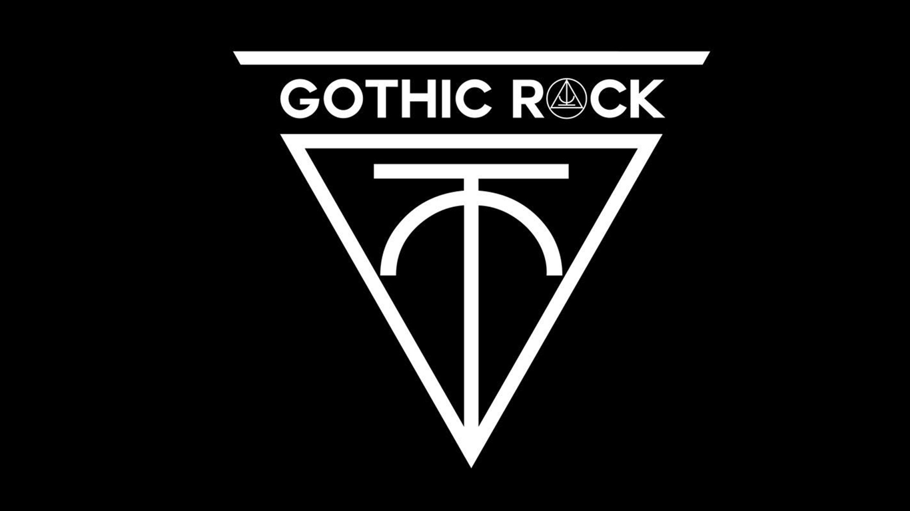

GOTHIC ROCK
Rock gótico es un género de la música que se desarrolló en la década de 1970 para convertirse en un estilo importante y distinto; se sabe sus sonidos oscuros y temas. El género ha tenido una gran influencia en la cultura popular, que conduce al metal gótico, los estilos góticos de la ropa, y una amplia subcultura gótica. Entre sus artistas y grupos más destacados se encuentran Cocteau Twins, The Cure, Siouxsie and the Banshees, y Joy Division.
El goth rock -como también es llamado-, surgió en Reino Unido y se ha convertido en uno de los subgéneros más populares de los últimos tiempos. Definir lo gótico y tribu urbana no es una tarea fácil, sin embargo, se distingue por sus letras, las cuales intentan describir sentimientos complejos, y sus agresivos arreglos de guitarra.El rock gótico les pertenece a los británicos es que ahí dio sus primeros pasos. Comenzó a gestarse en la década de los 60 y se consolidó como un subgénero en los 70.
Los instrumentos más utilizados en este son: guitarra eléctrica, bajos, batería.
